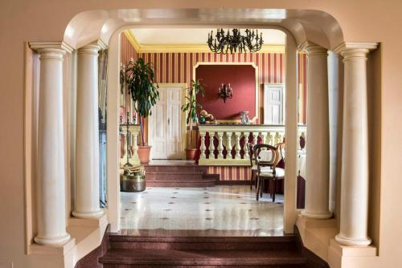
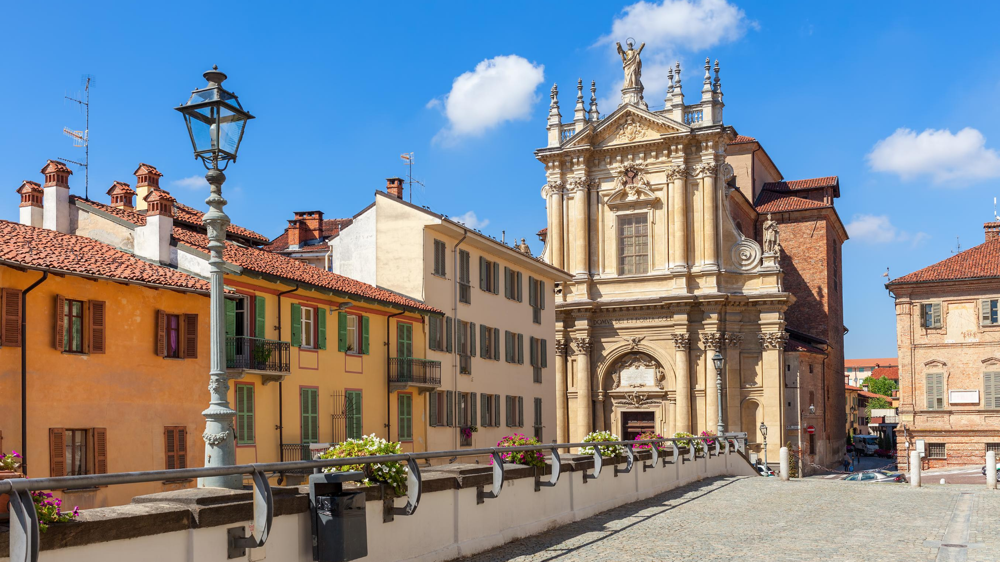
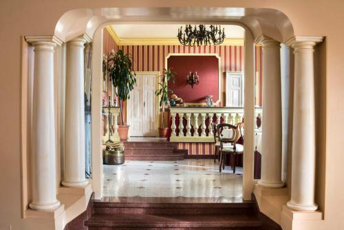
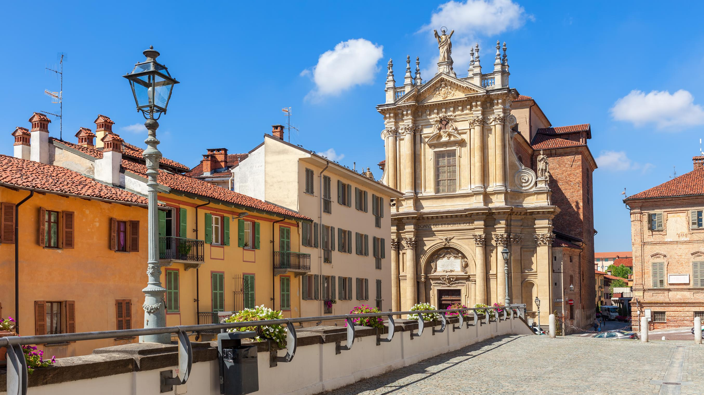

Wold Johansen Travel Agency
Belgium, France, Italy & Switzerland
03
Saturday, April 4
Lyon to Trofarello (near Turin)
 



Accommodation: Park Hotel Villa Salzea
Address: Via Duca Degli Abruzzi 29, Trofarello, Italy
Website: villasalzea.it
Location: Trofarello, less than 10 km from Turin center
A charming 3-star hotel housed in a restored 18th-century aristocratic villa, formerly the residence of Count Negri. Set in a large, exquisite park featuring a centuries-old beech tree.
Amenities:
- Restaurant on-site — dinner available
- Swimming pool (seasonal/summer)
- Free private parking
- Free WiFi, air-conditioning, garden views
- Historic park — perfect for an evening stroll
Activities
- Settle in and explore the villa grounds and historic park
- Dinner at the hotel restaurant
- Optional evening drive into Turin (~15 min) for a stroll through Piazza Castello
Booking Status
Park Hotel Villa Salzea — BOOKED
Route Considerations
Mont Blanc tunnel or Fréjus tunnel route from Lyon. Check tunnel traffic and tolls in advance. Trofarello is ideally positioned for the next day's drive to Bologna (~300 km, ~3 hours).